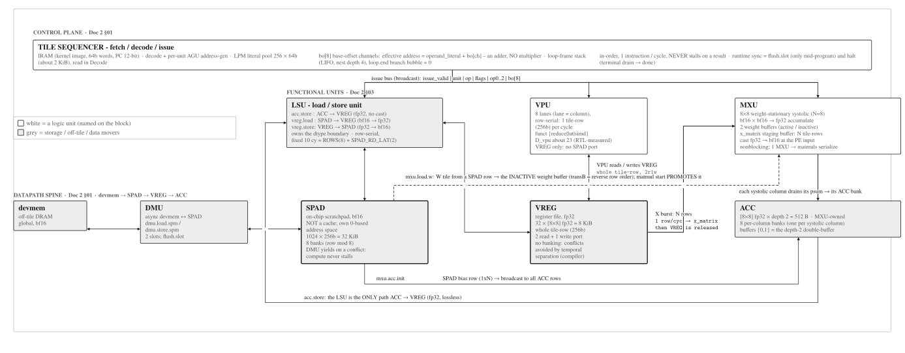
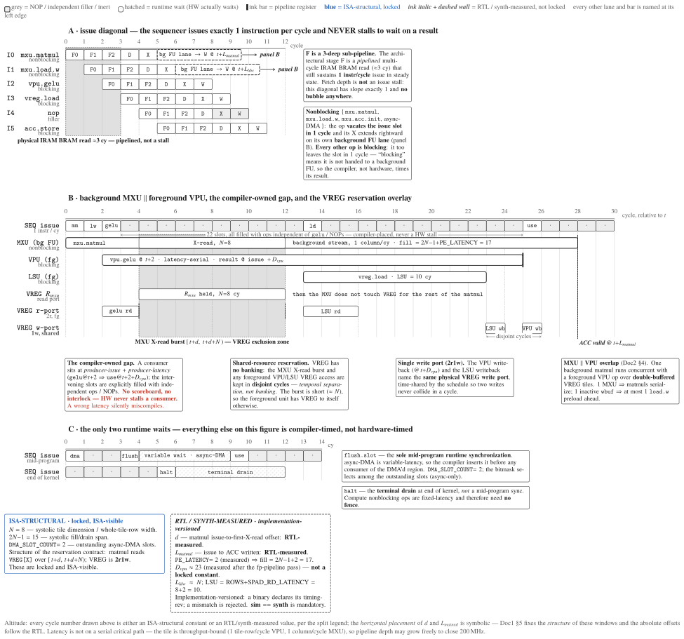

Compute tile: overview¶
The compute tile (npu/src/compute_tile/) is the sequenced datapath and the portable
IP core: a control front-end fetches and decodes a kernel from IRAM and dispatches each
instruction, by opcode, to one of two engines --- the MXU (systolic matrix unit) or the
VPU (vector unit) --- over the on-chip SPAD scratchpad and the VREG/ACC register
tiers. This page is the tile-level map: the datapath spine, the exposed issue model, the
within-tile concurrency levers, and the module tree. Engine internals live on their own
unit pages (below). Every constant is owned by the SSOT (npu/src/npu/npu_config_pkg.sv,
generated from npu/params.py); this page does not fix them by architecture.
Overview¶
Top-level compute tile: the devmem-SPAD-VREG-ACC spine plus the MXU, VPU, and tile
sequencer. compute_tile.sv instantiates exactly two children: sequencer (all control
logic + both compute engines) and spad (the scratchpad data memory).

Fig. 1.mininpu compute tile: block structure. Structural tier: every block of the tile and the buses between them · one sequencer broadcasts an issue bus to MXU / VPU / LSU · datapath spine devmem → SPAD → VREG → ACC · unit geometry only; PE-level detail is MXU Fig. 2.
Datapath spine¶
The tile's storage forms a value-dimensionality hierarchy along a single spine:
- devmem: off-tile DRAM (global). The DMU moves bulk bf16 devmem ↔ SPAD, async, SPAD-only.
- SPAD: on-chip scratchpad, bf16 operand memory (weights, activations, and bf16 1D vectors).
- VREG: fp32 vector register file. The LSU (owned by spad.md) is the SPAD ↔ VREG mover (
acc.store/vreg.load/vreg.store), casting bf16 ↔ fp32 on the SPAD side. - ACC: fp32 matmul accumulator. The MXU sources X from VREG (cast to bf16 at the PE) and drains its result to ACC --- there is no store-back to SPAD.
The VPU never touches SPAD directly: it operates on VREG and ACC, and all its SPAD-adjacent traffic is LSU-mediated. The DMU doctrine bounds the data plane: the DMU moves bulk bf16 between the interface tile and SPAD only; ACC and VREG are never touched by the DMU and are filled or drained only by compute-engine ops (see DMU).
Three-tier register hierarchy. The registers organize by the dimensionality of the value each tier holds:
Table: the v1 data-plane register hierarchy, by value dimensionality. SREG (a 0D scalar register file) is deferred; 0D constants are served by the literal pool.
| Tier | Value | Home | Management |
|---|---|---|---|
| 0D | scalar constant | literal pool (assembler-emitted) | immediate index; no register (SREG deferred) |
| 1D | reduced / weight vector | VREG (fp32 register file) | compiler reg-alloc; 5-bit id |
| 2D | accumulator tile | ACC (dedicated fp32 accumulator RF) | compiler-assigned indices; no explicit alloc/free |
The key structural decision is that ACC is a dedicated fp32 accumulator register file, physically separate from the bf16 SPAD operand memory (not an fp32 view aliasing shared SRAM). That separation enables high-performance tiling: in-place K-accumulation folds without a SPAD read-modify-write, operand loads (SPAD) and accumulator updates (ACC) never contend for one port, and a separate ACC lets the MXU produce one tile while the VPU consumes another.
Exposed issue model¶
In-order issue, 1 instruction/cycle. No producer-busy scoreboard; no hardware
interlock. All hazard avoidance is static compiler scheduling. The pipeline is
fully-exposed F / D / X / W (fetch, decode + per-unit AGU address gen, execute,
writeback), and the sequencer issues exactly 1 instruction per cycle and never stalls to
wait on a result. The only runtime waits are flush.slot (the sole mid-program sync, on an
async-DMA slot) and halt (the terminal drain at end of kernel).
Nonblocking set = {mxu.matmul, mxu.load.w, mxu.acc.init, async-DMA}; everything else
is blocking. Compute nonblocking ops are fixed-latency, so they need no fence
(compiler-timed); async-DMA is variable-latency, so the compiler inserts flush.slot
before any consumer of the DMA'd region. The ISA contract owns the
authoritative nonblocking-set list this page cross-refs.

Fig. 2.Compute-tile issue & overlap timeline. Fully-exposed F D X W pipeline · 1 instr/cycle, no scoreboard, no interlock · all hazard avoidance is static compiler scheduling.
The as-built RTL milestone still parks the FSM in WAIT_MXU / VEC_WAIT_VPU while a
sub-op completes; the exposed model above is the 0.5.0 target this page documents. The
sequencer's fetch-decode-dispatch lifecycle and the figure that draws it are on
Sequencer.
Within-tile concurrency¶
The in-order issue is the serial baseline; three hardware levers introduce targeted concurrency on top of it. They are additive and independent.
- SPAD dual-port. The scratchpad (
spad.sv) is true dual-port, single-clock: Port A is the DMU and Port B carries the compute clients (the LSU and the MXU, arbitrated). Both ports operate in the same cycle, so a DMA fill on Port A runs concurrently with compute on Port B. This is the substrate for the async-DMA ping-pong. - MXU per-PE weight double-buffer. Each PE holds an active and a next (inactive) weight
register;
mxu.load.wfills the inactive buffer andmxu.matmulswitches. Because the buffers are disjoint, the next tile'smxu.load.woverlaps the current tile'smxu.matmulcompute --- real cross-tile weight preload at the ISA level. - Async DMA slot. An async-flagged
dmu.load.spmfills SPAD over Port A while the sequencer computes on Port B; completion isdma_slot_done[slot]andflush.slotfences.
SPAD dual-port arbitration is between the DMU (Port A) and the LSU / MXU on Port B; under the 0.5.0 model all SPAD ↔ VREG traffic is LSU-mediated and the VPU is not a Port B client. (The as-built RTL additionally splits Port B into a second, lower-priority VPU path; that wiring fact, and its caveat, is homed on spad.md :: Ports and clients.)
Module structure¶
The tile is a small, fixed set of RTL modules; the sequencer is the only stateful controller and owns both engines. The whole-IP module tree is Home Fig. 1; the tile's own module set:
Table: top-level RTL modules of the compute tile (as-implemented).
| Module | Source | Role |
|---|---|---|
| compute_tile | compute_tile.sv |
Tile wrapper: sequencer (logic) + SPAD (data); exposes DMEM port (dm_*) to npu.sv |
| sequencer | sequencer.sv |
Top FSM: fetch → EXEC_DISPATCH + co-issue tracks; instantiates pc_iram, perf_counters, dma_addr_gen×2, mxu, vpu_ctrl |
| front-end | pc_iram.sv (pc · decoder) |
Fetch/decode: PC + IRAM (I_bram) + decoder + PC/pool addr mux; field layout mirrors mininpu/isa |
| MXU | mxu.sv · systolic.sv · pe.sv · mxu_accumulator.sv |
Matrix unit: 8×8 systolic array (GEMM) + banked FP32 ACC RF; distinct load.w + concurrent-preload WPL |
| VPU | vpu_ctrl.sv · vpu_lane.sv · vpu_gelu,reduce,cast_unit.sv · vec_regfile.sv |
Vector unit: counter-based controller + 8 lanes (gelu/reduce/cast FUs) + vector RF |
| spad | spad.sv |
Scratchpad BRAM: 8-bank true dual-port (A = DMU; B = compute) |
Key parameters¶
All capacities and widths are design-time parameters generated into npu_config_pkg.sv
from npu/params.py. Verify against the package before quoting.
Table: compute tile key numbers. All values are SSOT-owned parameters; verify against npu_config_pkg.sv before quoting.
| Quantity | Value | Source (SSOT) |
|---|---|---|
| Systolic array dimension N (N×N PEs) | 8 | npu_config_pkg::N |
| SPAD compute-bus / row width | 256-bit (8 × 32-bit word) | npu_config_pkg::SPAD_DATA_WIDTH |
| SPAD logical capacity | 1024 rows × 256-bit = 32 KiB | npu_config_pkg::SPAD_ADDR_WIDTH = 10 |
| SPAD read latency (both ports) | 2 cycles | npu_config_pkg::MEM_LATENCY |
| ACC register-file depth (banks) | 2 | npu_config_pkg::ACC_DEPTH |
| IRAM depth × word width | 4096 × 64-bit | npu_config_pkg::IRAM_DEPTH · INSTR_WIDTH |
| Opcodes & instruction field layout | --- | mininpu/isa (→ npu_isa_pkg.sv) |
Unit pages¶
One page per subject:
- Sequencer --- the control path: PC / IRAM / decoder, the lifecycle,
EXEC_DISPATCHfan-out, loops, halt. - MXU --- the 8×8 weight-stationary systolic array: ports, the array and one PE, the controller FSM, the accumulator banks.
- VPU --- the 8-lane FP32 SIMD unit: lane datapath, reduction trees, the uniform
D_vputerminal, the opcode class table. - SPAD --- the bf16 operand tier, its ports and clients, and the LSU (the SPAD ↔ VREG mover).
- DMU --- the async data-moving unit: async SPAD DMA, 2 descriptor slots,
dma_slot_done/flush.slotfencing. - GPT-2 demo --- the GPT-2 forward pass lowered to v1 tile kernels.
The Memory Tile (an on-chip staging/cache tier) is [v3]-deferred (RFC #158) and absent from the v1 tile.
Deeper dive: the RTL pitfall taxonomy (FSM / AXI / BRAM / systolic)
Hard-won traps from bring-up and timing closure. Each specific warning lives as an
inline comment at its exact code site; these are the classes. Individual engine pages
cross-reference the rows that concern them (FSM timing → sequencer; systolic timing and
PE_LATENCY → MXU; BRAM OREG / read-latency → SPAD; AXI / protocol-sync → uncore).
Table: RTL pitfall classes. Each specific warning lives as an inline comment at its code site.
| Class | Gist |
|---|---|
| FSM state-machine timing | reset/NBA races; keep the explicit else-branch (last-NBA-wins) |
| AXI / protocol sync | drive pointers off the registered handshake |
| BRAM register absorption | DONT_TOUCH stops Vivado folding regs into the BRAM OREG |
| Comb.-cone explosion | split into named always_comb blocks |
| Systolic pipeline timing | row-stagger / valid-delay matching across the PE array |
| BRAM read-latency config | keep sim + synthesized OREG consistent with MEM_LATENCY |
| Fixed- vs floating-point lat. | LATENCY/PE_LATENCY drives FSM wait states |
Deeper dive: the three-tier tile taxonomy in contemporary NPUs (AMD XDNA2)
mininpu's compute-tile / memory-tile / interface-tile split is a standard NPU taxonomy.
AMD XDNA2 (AIE-ML) is a 2D grid of AI Engine tiles with the same three tiers:
compute tiles (VLIW/SIMD + ≈32 KB local memory), memory tiles (on-chip L2 staging), and
interface / shim tiles to the SoC, with data moved by DMA over a stream-switch
interconnect. The correspondence is direct: our compute_tile / memory_tile
(deferred) / interface_tile.
mininpu · compute-tile overview · back to home